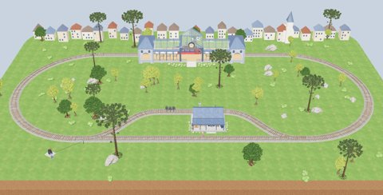

Dilema do Bonde em RA

Toque na maquete para abrir em realidade aumentada.
No iPhone ou iPad, use o Safari. Se aparecer o modo Objeto, toque em AR no alto da tela. Aponte para a mesa ou o chão.
Toque nas placas Manter o curso, Desviar o bonde e Reiniciar. Use pinça para ajustar o tamanho e arraste para mudar de lugar.
Trilho principal: 1 trabalhador. Ramal: 3 desconhecidos.
Coloque a maquete sobre a mesa ou o chão e decida o percurso do bonde.
Primeiro prepare a maquete. Depois, abra a câmera e permita o acesso.
Rastreamento de câmera: 8th Wall Engine © 2026 Niantic Spatial, Inc. · Licença